Terraria
Kaynak Toplama
Terraria'da çeşitli kaynaklar toplanabilir. Bu kaynaklar, oyuncuların yapılarını inşa etmelerine ve güçlendirmelerine yardımcı olur.
Kaynak Türleri
| Seviye | Maden Adı | Üretim | Gereken En Düşük Alet | Bulunduğu Yer | Hardmode | Nadirlik | Satış Fiyatı |
|---|---|---|---|---|---|---|---|
| 1 | 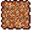 Copper Ore |
3 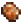 =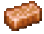 |
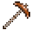 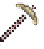 |
Yüzey, Yeraltı, Mağara | 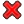 |
Beyaz | 50 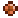 |
| 1 | 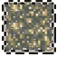 Tin Ore |
3 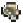 =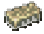 |
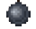 |
Yüzey, Yeraltı, Mağara | Beyaz | 75 | |
| 2 | 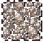 Iron Ore |
3 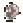 =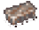 |
 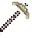 |
Yüzey, Yeraltı, Mağara | Beyaz | 1 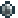 |
|
| 2 | 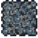 Lead Ore |
3 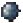 =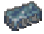 |
Yüzey, Yeraltı, Mağara | Beyaz | 150 | ||
| 3 | 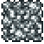 Silver Ore |
4 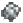 =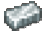 |
  |
Yeraltı, Mağara, Yüzen Ada, Yüzey (nadir) | Beyaz | 150 | |
| 3 | 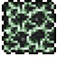 Tungsten Ore |
4 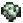 =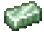 |
Yeraltı, Mağara, Yüzen Ada, Yüzey (nadir) | Beyaz | 225 | ||
| 4 | 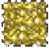 Gold Ore |
4 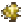 =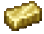 |
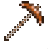  |
Yeraltı, Mağara, Yüzen Ada, Yüzey (çok nadir) | Beyaz | 3 | |
| 4 | 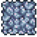 Platinum Ore |
4 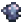 =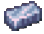 |
Yeraltı, Mağara, Yüzen Ada, Yüzey (çok nadir) | Beyaz | 450 | ||
| 5 | 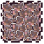 Meteorite |
3 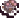 =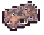 |
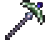 |
Meteor biyomu | Beyaz | 2 | |
| 6 | 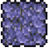 Demonite Ore |
3 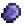 =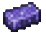 |
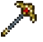 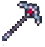 |
Mağara, Corruption yarığı; Eye of Cthulhu (Corruption dünyası), Eater of Worlds | Mavi | 10 | |
| 6 | 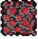 Crimtane Ore |
3 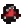 =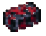 |
Mağara; Eye of Cthulhu (Crimson dünyası), Brain of Cthulhu | Mavi | 13 | ||
| 7 | 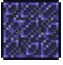 Obsidian |
— | 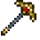 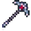 |
Su ile lavın temas ettiği yer | Beyaz | Satış değeri yok | |
| 8 | 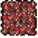 Hellstone |
3 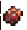 +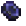 = |
Underworld | Yeşil | 250 | ||
| 9 | Cobalt Ore | 3= | Yeraltı, Mağara | Turuncu | 7 | ||
| 9 | Palladium Ore | 3= | Yeraltı, Mağara | Turuncu | 9 | ||
| 10 | Mythril Ore | 4= | Mağara | Turuncu | 11 | ||
| 10 | Orichalcum Ore | 4= | Mağara | Turuncu | 13 | ||
| 11 | Adamantite Ore | 4= | Mağara (yaklaşık lav derinliğinde) | Turuncu | 15 | ||
| 11 | Titanium Ore | 4= | Mağara (yaklaşık lav derinliğinde) | Turuncu | 17 | ||
| 12 | Chlorophyte Ore | 5= | Yeraltı Ormanı | Lime | 15 | ||
| 13 | Luminite | 4= | Moon Lord | Beyaz | 30 |